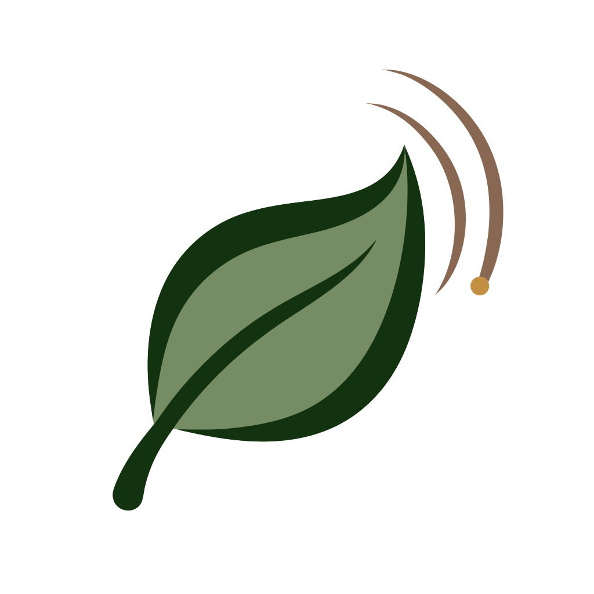
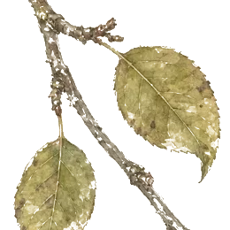

Garden toolsBuild & plant
{{ journeyEyebrow }}
{{ journeyDone }}/{{ journeyTotal }}{{ journeyProgressLabel }}
{{ journeyIcon }}
{{ journeyLabel }}
{{ journeyWhy }}
Pay with
Shares are time and know-how from the community; the Fund is the shared project budget in euros.
{{ g.title }}
{{ it.srBefore }}
{{ it.art }}
{{ it.name }}{{ it.termHelp }}
{{ it.reuseIcon }} {{ it.barter }}
buy only
{{ it.seasonBadge }}
{{ it.seedIcon }} free seed
€{{ it.price }}
{{ it.srAfter }}
Click or drag onto the plotTap an element, then tap the plot · {{ reuseIconFooter }} build by sharing · {{ seasonLegendIcons }} planting seasons v0.88.0
Your garden plot
Training plot · Le Jardin, France
{{ ideaIconHint }}{{ pendingGuildText }}
{{ gardenViewLabel }}{{ gardenViewDescription }}
{{ gardenViewCustomNote }}
＋
{{ placementTitle }}{{ placementHint }}
{{ nudgeMark }}
{{ nudgeTitle }}{{ nudgeText }}
＋
{{ chp.art }}
{{ sp.art }}
{{ lp.art }}
{{ d.art }}
{{ treeEl }}
Cherry tree
{{ gateEl }}
Menet
✦
{{ t.scene }}
{{ t.seasonArt }}
{{ t.partnerLabel }}
{{ t.scene }}
{{ t.seasonArt }}
{{ t.partnerLabel }}
{{ systemLinksArt }}
{{ guildLinksArt }}
{{ gl.text }}
{{ cr.art }}
{{ cr.zzz }}{{ emptyTitle }}
{{ emptyText }}
Relationship changed
{{ gardenPulseName }} +{{ gardenPulseDelta }}
{{ gardenPulseReason }}

The garden notices
“{{ gardenWhisperText }}”
✦
❀
✿
✦
{{ arrival.art }}
{{ arrival.label }}
{{ arrival.name }}
{{ arrival.why }}
🌿 A possible visitor
{{ visitView.intro }}
{{ visitView.q }}
{{ visitView.resultTitle }}
{{ visitView.fact }}
{{ arrivalBatch.label }}
{{ it.art }}
{{ it.name }}
{{ it.why }}
{{ toastText }}
The sharing table is still ahead
Care for soil, water, food and habitat first. The community table opens when your garden can offer a genuine surplus.
Community sharing table
Shared pool {{ poolValue }}/100
· {{ poolImpact }}
Give to
the community
the community
{{ o.art }}
{{ o.personInitial }}{{ o.person }}
{{ o.seasonTag }}{{ o.text }}
Quiet right now — tap “See who's sharing today”.
{{ cm.personInitial }}{{ cm.text }}
🧺 Harvest basket
{{ freshStallDescription }}
{{ b.art }}
{{ b.name }} × {{ b.count }}
Garden insightLearn & reflect
Design connections
{{ calmFocusKicker }}
{{ calmFocusTitle }}
{{ calmFocusWhy }}
{{ calmChooseLabel }}
{{ calmPlaceLabel }}
{{ calmNoticeLabel }}
{{ scoreVisual }}
{{ statusText }}
About this learning model
This is a practice plot inspired by the real youth-run community garden in Menet — not a literal site plan or scientific assessment. Camille, Noa, Léa, Malik, Anaïs and Baptiste are fictional composite characters.
“Shares” are game tokens for participation. A real fair share may be time, care, knowledge, access or surplus, without expecting equal repayment.{{ scoreExplain }}
“Shares” are game tokens for participation. A real fair share may be time, care, knowledge, access or surplus, without expecting equal repayment.{{ scoreExplain }}
Relationships, not checkboxes
{{ sv.icon }}{{ sv.name }}
{{ sv.value }}%
{{ sv.learnedLine }}
{{ m }}
Every learning theme is represented — keep observing the real garden.
{{ nextStep.kicker }}
{{ nextStep.progress }}
🌻 Every learning layer is represented — now watch how the real garden responds.
{{ nextStep.label }}
Ask the garden
{{ livingLessonExperimentTitle }}
{{ livingLessonExperimentAction }}
{{ livingLessonExperimentProgress }}
Ask what the garden notices
A short reflection becomes one testable design experiment. The garden rules stay deterministic.
Who might visit your garden
{{ activeCount }}/10
{{ w.art }}
🧰 Reclaimed materials
{{ mt.art }}
{{ mt.name }} × {{ mt.count }}
Food for thought
{{ info.art }}
{{ info.name }}
{{ info.catLabel }}
{{ info.desc }}
Shares with the community: {{ info.giveText }}. {{ info.materialText }}
Why it matters
{{ info.why }}
Working relationships here
↔ {{ rel }}
It may support

Pick or drop an element to learn what it does and why it belongs in a permaculture garden.